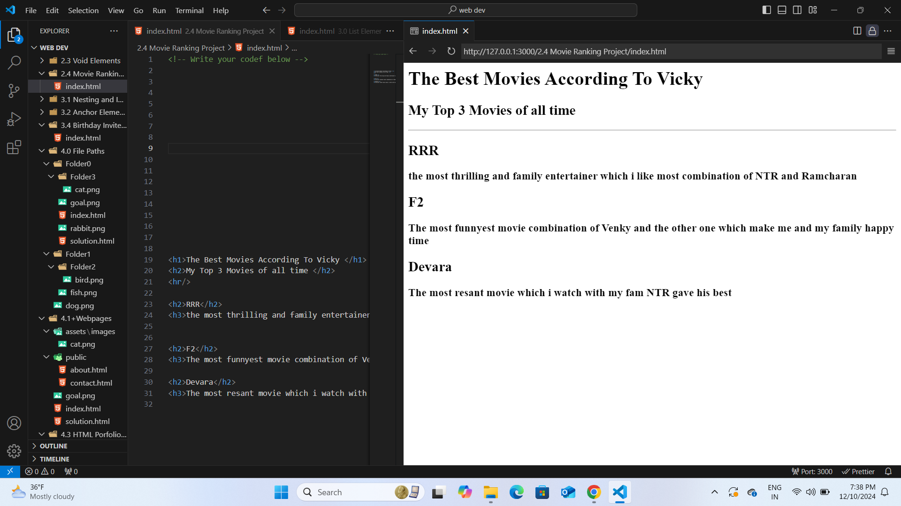
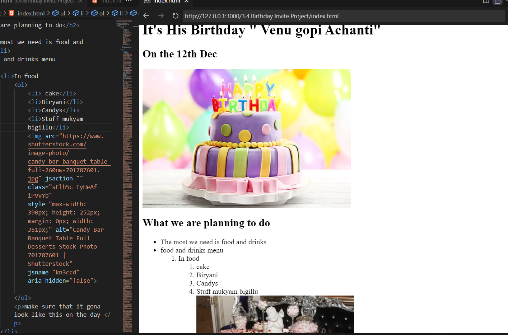

KATTA's Portfolio
I am a web developer
I create modern, responsive, and user-friendly websites that deliver exceptional user experiences.
What I Bring to the Table:
- Expertise in front-end and back-end development
- Strong foundation in cybersecurity for secure web applications
- Creative problem-solving and attention to detail
- Experience with responsive design and accessibility
My Work's:


linkedin